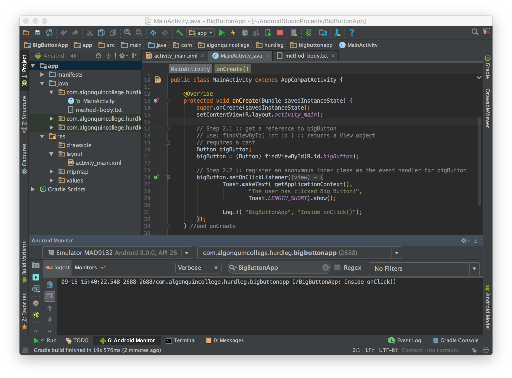

In this document, we'll learn how to implement the event handler for Big Button by using an anonymous inner class.
This strategy is very common for Java developers.
Edit activity_main.xml (res > layout), select the Button from the Component tree.
Set the android:id property for the Button to: @+id/bigButton
<Button
android:id="@+id/bigButton"
android:layout_width="wrap_content"
android:layout_height="wrap_content"
android:layout_centerHorizontal="true"
android:layout_centerVertical="true"
android:text="@string/buttonText"
android:textSize="36sp" />
Notice: the onClick property is not set.
In this step, we'll implement the event in Java code.
Edit MainActivity.java, and change the onCreate instance method to:
@Override
protected void onCreate(Bundle savedInstanceState) {
super.onCreate(savedInstanceState);
setContentView(R.layout.activity_main);
// reference bigButton by calling findViewById
// requires a cast: (Button)
Button bigButton = (Button) findViewById(R.id.bigButton);
// register an anonymous inner class as the event handler for bigButton
bigButton.setOnClickListener(new View.OnClickListener() {
@Override
public void onClick(View view) {
Toast.makeText( getApplicationContext(), "The user has clicked Big Button!", Toast.LENGTH_LONG ).show();
Log.i( "BigButtonApp", "Inside method: onClick()" );
}
});
} //end onCreate
Please watch as I use Android Studio to help me write the anonymous inner class:
https://www.youtube.com/watch?v=e70EhWpu-Oo&feature=youtu.be
Run Big Button App on the emulator, and click Big Button :)
You should see a Toast message (once per button click), and a log message (once per button click).
